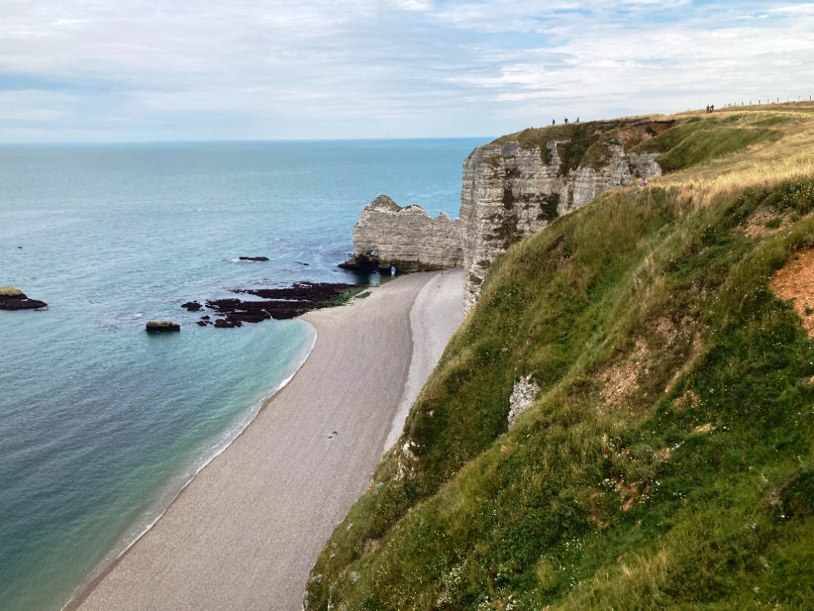

Úvod do problematiky světových válek
Vítejte na vzdělávacím portálu věnovaném dvěma největším válečným konfliktům v dějinách lidstva. Světové války představují zásadní milníky moderních dějin, které navždy změnily politickou mapu světa, společnost i technologický pokrok.
Na těchto stránkách najdete:
- Podrobné analýzy příčin a důsledků obou konfliktů
- Popisy klíčových bitev a vojenských operací
- Medailonky významných osobností
- Vývoj vojenské techniky a technologií
- Autentické fotografie a dokumenty
"Kdo nezná svou minulost, je odsouzen ji opakovat."
- George Santayana
1. světová válka (1914–1918)
První globální konflikt moderní éry, který si vyžádal životy více než 16 milionů lidí. Tato válka přinesla:
- Zákopovou válku na západní frontě
- První masové nasazení tanků a bojových plynů
- Rozpad čtyř velkých říší (Rakousko-Uhersko, Osmanská říše, Německo, Rusko)
- Vznik nových států včetně Československa
2. světová válka (1939–1945)
Nejničivější konflikt v dějinách lidstva s 60-80 miliony obětí. Klíčové aspekty války:
- Holocaust a genocidy
- Válka v Tichomoří a Evropě
- Nasazení jaderných zbraní
- Vznik OSN a počátek studené války
Proč studovat světové války?
Historické ponaučení
Porozumění příčinám války nám pomáhá předcházet podobným konfliktům v budoucnosti.
Technologický pokrok
Válečné úsilí urychlilo rozvoj medicíny, letectví, elektroniky a dalších oborů.
Společenské změny
Války zásadně ovlivnily postavení žen, koloniální systémy a mezinárodní vztahy.